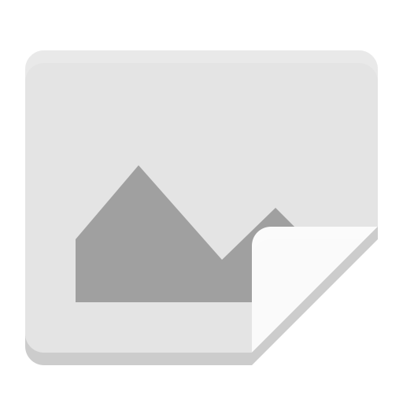
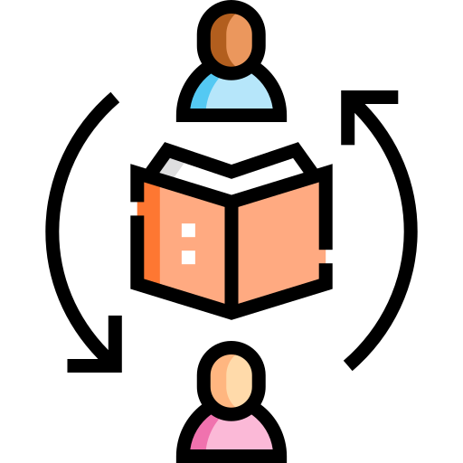
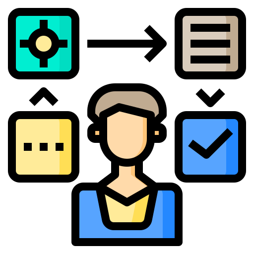
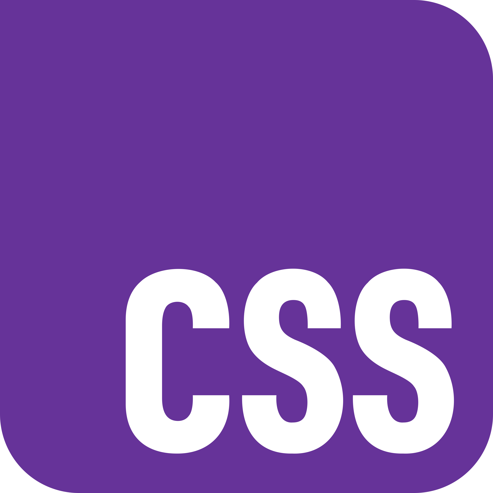
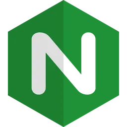
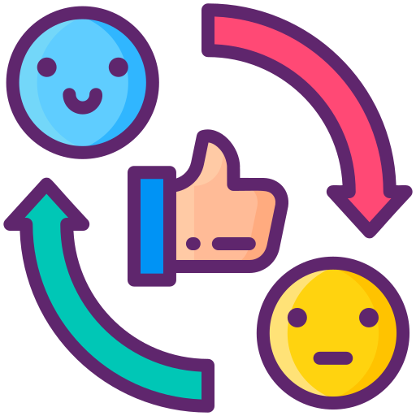
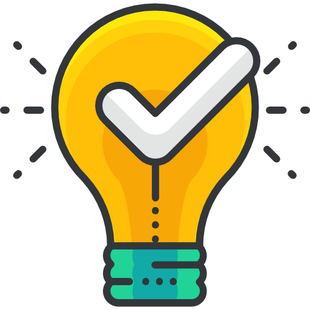
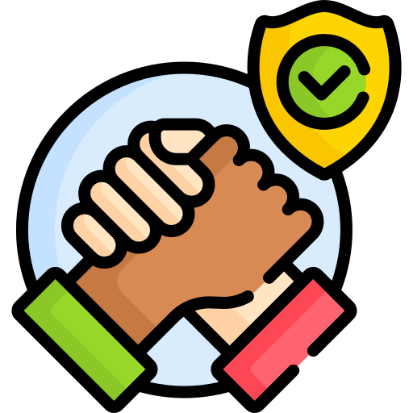

Análisis del proceso de desarrollo, aprendizajes técnicos y conclusiones del equipo.
Encargada de gestionar el tablero de Jira y coordinar la recopilación de la investigación. Estructuró y diseñó las páginas de "Contenidos", "Reflexión" y su página individual usando HTML y Bootstrap, aportando también a estructurar la página principal para cumplir con la pauta. Además, participó en la investigación técnica inicial y en las pruebas conjuntas de despliegue para verificar el correcto funcionamiento del contenedor Docker.
Se encargó de inicializar el proyecto, seleccionar la plantilla base y diseñar el logo del equipo. Fue el responsable de investigar y documentar los 13 comandos esenciales de Docker, además de armar las plantillas base para las páginas individuales y desarrollar la suya propia. Brindó soporte técnico constante al equipo para la resolución de problemas.
Encargado de la investigación técnica del Frontend, documentando la teoría y aplicación práctica de CSS y el framework Bootstrap. Apoyó en la configuración y parámetros del archivo Dockerfile, participó activamente en las revisiones del código aplicando correcciones de sintaxis y ortografía, y desarrolló exitosamente su página individual.
Llevó a cabo la investigación técnica sobre la instalación de Docker y Nginx, elaborando la documentación correspondiente. Participó activamente en la maquetación inicial del proyecto durante las sesiones conjuntas (pair programming) por Discord. Logró levantar exitosamente el contenedor en su entorno local de pruebas y completó el desarrollo integral de su página individual.
Rol de QA (Aseguramiento de Calidad) y Servidores. Estructuró y configuró el archivo nginx.conf, aplicando comandos avanzados para resolver problemas de despliegue y asegurar la correcta lectura de archivos en el contenedor. Investigó y documentó sobre HTML, maquetó su página individual y es el encargado de ejecutar las pruebas de calidad (QA) para dar el visto bueno final al sitio antes de la entrega.














"Al asumir el rol de Scrum Master, inicialmente me sentí abrumada ante el desafío de estructurar y asignar las tareas; existía la duda constante de si lo estaba haciendo bien. También sentía mucho temor de equivocarme y dañar el proyecto. De hecho, en un momento rompí parte del código en el archivo index.html. Sin embargo, un compañero con más experiencia lo solucionó rápidamente, con total disposición y sin reproches. Esa actitud empática del equipo me hizo perder el miedo a intentar cosas nuevas y me generó muchísima confianza. Fue un gran desafío colaborativo que me demostró que equivocarse es parte del proceso, ayudándome a avanzar tanto en lo personal como en lo profesional."
"Falta rellenar reflexión individual..."
"Falta rellenar reflexión individual..."
"Falta rellenar reflexión individual..."
"Este laboratorio de crear una página web hizo que aprenda desde cero como hacer un página en HTML, en conjunto de esto aprendí como se utilizan los estilos de páginas y servidores locales con docker, y sobre todo el uso de github para trabajar de forma paralela. El trabajo en equipo fue fundamental para este proyecto, y no hubiese sido lo mismo sin las ideas de los compañeros, asi que agradezco la buena voluntad del equipo para sacar este proyecto a la luz."
 Los Computines
Los Computines